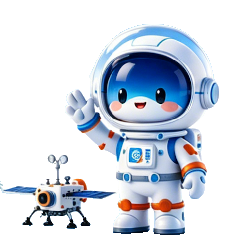
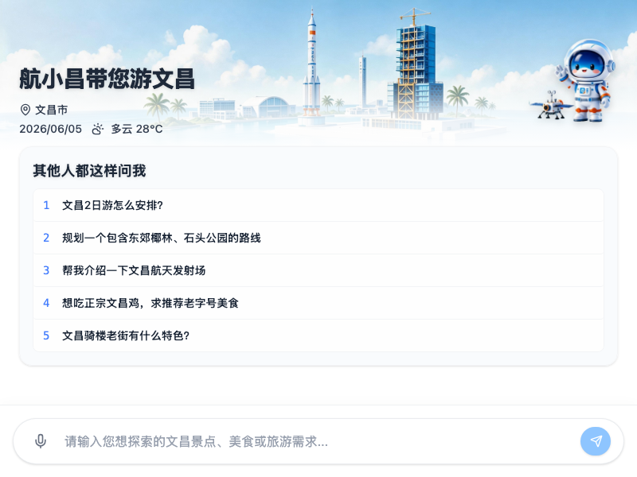

数字化文旅导览交互系统
为全面贯彻落实数字化文旅建设精神，推动智慧文旅服务的深度融合，提升文昌旅游的高质量服务体验。本项目基于文昌的景点、航天、文化等数据，搭建文昌文旅专属旅游智能体。应用以拟人化数字IP为核心服务载体，为国内外游客提供全天候、高精度的在线咨询服务。系统主要运行于移动端智能终端，以轻量化手段提升文昌城市旅游的科技化与现代化形象。
本系统重点建设三个维度的垂直知识问答能力，以精准响应游客的信息诉求：
系统应具备自动化路线规划与景点深度讲解等核心功能。针对短期及长途来访游客，能够即刻输出如"两日游经典路线"等结构化旅游执行方案。
依托文昌建设国家航天发射中心的特殊优势战略定位，系统深度融入航天专项知识及数据。可自动解答火箭发射场周边观测指南、航天器基础型号科普及当地航天活动日历等专业问题。
结合地方风物特色，为游客提供地道的餐饮（如文昌鸡、抱罗粉）、商圈街区（如文南骑楼老街）及特色文旅住宿等实用信息参考，实现数字化文旅推荐。

为赋予智能助手更生动的人格特化，目前设计了初步的视觉形象（如左侧图示），并提供以下体现"文昌+航天"主题特色的 IP 命名备选方案供定夺：
以"航小昌"为例，其拟人化设定为：热情好客、精通航天科学并熟稔本地风物底蕴的智慧政务及文旅向导。
H5前端页面采用沉浸式全屏流式交互布局。视觉体系中融合椰林海岛风情与航天文化元素。为兼顾适老化及通用性易用需求，首屏输入区域设置常驻引导式预置词卡片（快捷提问按钮），确保各年龄层群体的政务级无障碍操作体验。
以下是部分功能的Demo演示，可直观体验系统初步的智能问答交互效果。若当前页面加载出错，您也可以 直接访问演示链接 进行体验。
— D E M O 演 示 （Web 版） —

点击上图或下方链接，访问在线交互演示：
https://wenchang-travel-267871-7-1441387161.sh.run.tcloudbase.com/
若 Demo 无法加载（503），说明演示服务正在冷启动，请 点击新窗口打开 或等待 30 秒后